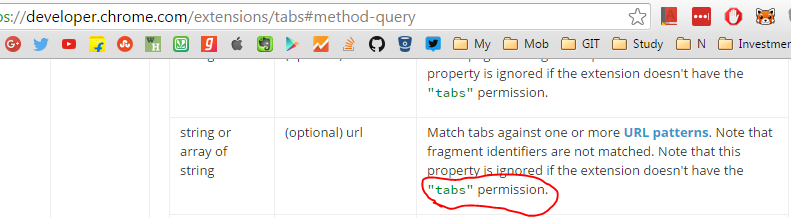
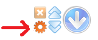

Hello everyone. I know that latest updates (version 4.5.1 to be precise) on Chrome and Opera has raised everyone's eyebrows. That is why I took it very seriously to provide the explaination so that it will be clear as in why the new permission dialog is coming. I didn't know that by declaring one permission will show a very aggressive permission dialog box like this. I myself got worried when I saw this.
Why suddenly Scroll To Top needs Permission?
Recently Chrome extnesion tabs API requires "tabs" permission if I want to use tabs.query() with URL. See the post here. Below is the screenshot of the API docs.  See the pull Request on GitHub for the changes that are done to achieve this.
Why was I quering the tabs in Scroll To Top?

When you click on the settings button, the system will do following tasks:
- It queries all the open tabs to see if the options page is already open.
- If it is already opened then it will make that tab as active tab.
- If the option page is not already opened then it will create a new tab to open the options page.
Should I be worried?
No. Scroll To Top is made with love and the sole purpose is to give satisfaction to everyone. I worked really hard to make it what it is today. It is my passion. I love my users and want to distribute some good piece of work to everyone. It is completely open sourced. You can visit the GitHub repository and provide you contribution and feedback. https://github.com/pratikabu/scrolltotop
What's Next?
I've released a new version 4.5.2 which will resolve this issue. It should reach to your browser soon.
I've removed the above mentioned logic for quering the tabs.
Now whenever you click on the settings button, the system will always open a new tab for the options page.
With that said, I've removed the "tabs" permission as well.
Conclusion
I hope this page has given enough background to everyone's satisfaction. Kindly do let me know what you think in the below comments section. I'll be active enough to reply for everyone's query. A latest version has been released after removing the "tabs" permission and the small functionality.